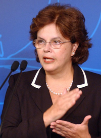

|
|
نامه 180 نفر از فعالان حقوق زن به دیلما روسف رئیس جمهوری برزیل
دو شنبه23 اسفند 1389

نامه 180 نفر از فعالان حقوق زن به دیلما روسف رئیس جمهوری برزیل :
از شما می خواهیم به زنان ایران و جهان نشان دهید که به نقض حقوق زنان در ایران معترضید.
این نامه به ابتکار برخی ار فعالان جنبش زنان نگاشته و توسط 180 نفر از حامیان و مدافعان برابری جنسیتی امضا شده است.
نامه به رئیس جمهوری برزیل به همراه امضاها به دفتر ایشان ارسال شده است و اسامی محفوظ خواهد ماند.
متن نامه به شرح زیر است :
نامه به رییس جمهور منتخب مردم برزیل سرکار خانم دیلما روسف
رونوشت به رسانه ها
تاریخ: 10 مارس 2011
خانم دیلما روسف،ر ییس جمهور کشور برزیل
خانم رییس جمهور، ابتدا پیام تبریک ما را به مناسبت روز جهانی زن بپذیرید. امیدواریم که شما بتوانید با اتکا به آرای مردمان برزیل به خواست های جنبش زنان در کشور خود تحقق ببخشید. ما آرزومندیم که همبستگی شهروندان برزیل و ایران با تحکیم روابط دوستانه و مبتنی بر آزادی و برابری خواهی و به ویژه پی گیری مبارزه علیه همه ی مظاهر ستم جنسی در جوامع ما، تحکیم و تعمیق یابد.
خانم روسف، رییس جمهور محترم کشور برزیل، آنچه ما، جمعی از فعالین در عرصه حقوق زنان، را به نوشتن این نامه خطاب به شما واداشت، دو دلیل عمده دارد:
شما نخستین رئیس جمهور زن منتخب برزیل هستید، از مبارزان سرشناس جنبش آزادی خواهی برزیل بوده اید، روزگاری زندانی سیاسی بوده اید و معنای شکنجه، آزار جسمی و روانی را لمس کرده اید.
دلیل دوم وجود روابط گسترده ی دیپلماتیک و اقتصادی ایران و برزیل است که در دولت های پیش از شما دنبال شده است. قاعدتا دولتمردان تاریخ و یا دولتزنانی که در روابط با سایر کشورها جز به منافع اقتصادی و سیاسی کشورشان نمی اندیشند، مورد توجه ما نیستند، اما سابقه فعالیت گسترده شما در مبارزات آزادیخواهانه ما را بر آن داشت تا از شما بخواهیم در مذاکراتی که با دولت ایران انجام می دهید موارد مربوط به نقض حقوق زنان و آزادی های فردی را مورد اعتراض قرار دهد، و منافع شهروندان و رعایت حقوق بشر و حقوق زنان در ایران را در چگونگی روابط تان با دولت ایران مدنظر قرار دهید.
خانم رییس جمهور روسف، وضعیت تبعیض علیه زنان در ایران اسفناک است، به عنوان مثال، در زمینه حقوق سیاسی، هم براساس ابهامات قانونی در قانون اساسی و هم نهادهایی چون شورای نگهبان که ناظر بر امور انتخابات است، هیچ زنی نمی تواند در ایران رئیس جمهور شود.
در زمینه ی قوانین خانواده، طبق قوانین ایران، زنان از حقوق برابر با مردان برخوردار نیستند، به صرف زن بودن ملزمند که برای سفر، انتخاب شغل و تحصیلات از شوهر و خانواده پدری اجازه ی کتبی دریافت کنند. حق سرپرستی درخانواده با مرد است، و دختران در انتخاب شوهر استقلال ندارند و تنها با اجازه پدر و جد پدری می توانند ازدواج کنند. خشونت های ناموسی علیه زنان و چراغ سبز قانون به مردان، اعمال خشونت های خانگی علیه زنان را افزایش داده است. زنان حق طلاق برابر با مرد ندارند و قوانینی چون چند همسری مردان بسیاری از زنان را با مشکل مواجه کرده است.
درزمینه حقوق شهروندی، زنان در ایران از حق انتخاب آزادانه ی پوشش خود محرومند و هر روز به دلیل شکل حجاب شان با خشونت پلیسی مواجه می شوند. زنان دانشجو با تبعیضات جنسیتی در دانشگاه ها رو به رو هستند و هم اکنون همچون مردان دانشجو به دلیل انتقاد و ابراز عقیده یا در زندان و تبعیدند یا از حق تحصیل محروم شده اند. فعالان کارگری، قومیتی و مذهبی به دلیل اعتراض به نقض حقوق شان، به خاطر دفاع از حق تحصیل به زبان مادری و به خاطر اعتراض به وجود فقر و محرومیت مورد خشونت قانونی قرار گرفته اند. زنان معترضی چون شیرین علم هولی فعال کرد جانش را به همین دلایل تسلیم اعدام کرد و و هر روز آمار اعدام و صدور حبس های طولانی برای زندانیان افزایش می یابد.
نابرابری ها در عرصه ی حقوقی منجر به افزایش سرکوب و خشونت به زنان در همه ی عرصه های زندگی اجتماعی و خانوادگی شده است و اعمال خشونت های قانونی علیه زنان را شده است. قوانین خشونت آمیز اعدام و سنگسار تاکنون جان زنان زیادی را که سعی کرده اند در برابر بن بست های قانونی راه حل های فردی بیابند، گرفته است.
خانم رئیس جمهور، زنان ایران در برابر این خشونت ها ساکت ننشسته اند، حقوق دانان و وکلای حقوق بشر و زنان، در قالب اقدامات فردی و جمعی و کمپین های بسیار، دست به اعتراض زده اند اما اعتراض آنان با بازداشت، تبعید و محرومیت از تحصیل مواجه شده است. نمونه هایی را نام می بریم؛ بهاره هدایت فعال دانشجویی و فعال حقوق زنان به خاطر خواندن بیانیه ای خطاب به دانشجویان جهان و شرکت در تجمع اعتراضی زنان به 9 سال زندان محکوم شده است، شیوا نظر آهاری گزارشگر حقوق بشر، فعال زنان و دانشجوی محروم از تحصیل به 4 سال زندان در تبعید و شلاق محکوم شده است. نسرین ستوده وکیل مدافع حقوق بشر که به جرم دفاع از موکلانش که عمدتا فعالان حقوق زنان، دانشجویی و کارگری و یا زنان و کودکان محروم و محکوم به اعدام بوده اند و هم چنین گفتگو با رسانه ها، از سپتامبر سال گذشته تاکنون در زندان است و اکنون به 11 سال زندان محکوم شده است.
شما به تجربه می دانید که صاحبان قدرت برای موجه جلوه دادن سرکوب مردم و فعالین جنبش های مردمی، آنان را به جرایمی متهم و منتسب می کنند که واقعی نیستند. شما که برای سربلندی و رهایی مردمان برزیل رزمیده اید می دانید که آرمان خواهان همواره توسط قدرتمداران به همکاری با بیگانه و یا جرائمی مشابه و مستوجب مجازات، متهم می شوند.
هم اکنون بسیاری از فعالان قومیتی، روزنامه نگاران، فعالان کارگری، سیاسی محکومیت های سنگین دریافت کرده اند.
رییس جمهور محترم برزیل، تنها آرمان زنان مبارز ایرانی ارتقای آگاهی خود و خواهرانشان و تلاش برای تغییر موقعیت تبعیض آمیزشان بوده است. زینب جلالی زن جوان کرد و فعال جنبش کارگری اکنون پس از سال ها زندان، در انتظار اعدام به سر می برد. خانواده ها را به جرم اعتراض به زندانی و یا کشته شدن فرزندانشان به زندان می افکنند.
خانم رییس جمهور، صدای مردم ایران را اکنون جهانیان می شنوند، صدایی که کاملا تفکیک شده از صدای دولت و مراجع قدرت در ایران است. ما معتقدیم که منافع درازمدت کشور برزیل با رشد دموکراسی در ایران و توجه به حقوق سیاسی و مدنی شهروندان ایران گره خورده است. منافع برزیل و پیوند عمیق و برابر مردم کشور شما و ما تنها در چارچوب احترام به آرمان های مشترک مردمان این دو کشور تحقق می یابد.
ما از شما درخواست می کنیم که در هر نوع ارتباطی که طبق قوانین کشور خود با ایران لحاظ می کنید، به زنان ایران و جهان نشان دهید که شما به عنوان اولین رییس جمهور زن برزیل، در کنار آنان ایستاده اید و به نقض حقوق زنان و شهروندان در ایران معترضید.
با احترام